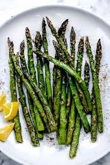

GRILLED ASPARAGUS

Description:
Asparagus made in only minutes that is perfect for a side dish or for a quick snack!
Ingredients:
- Drain the fried chicken on paper towels. Depending on how much chicken you have, you may have to fry in a few shifts. Keep the finished chicken in a slightly warm oven while preparing the rest.
- 1 tablespoon olive oil
- Salt and pepper for taste
Directions:
- Preheat an outdoor grill for high heat and lightly oil the grate.
- Lightly coat the asparagus spears with olive oil. Season with salt and pepper to taste
- Cook asparagus on the preheated grill, turning often until lightly charred and fork-tender about 3 to 5 minutes.